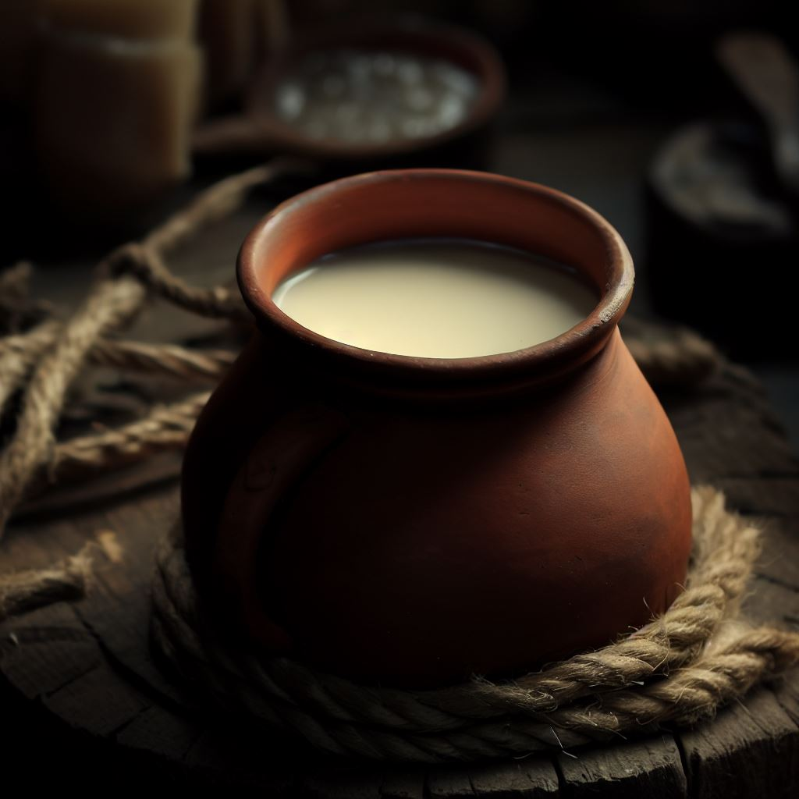
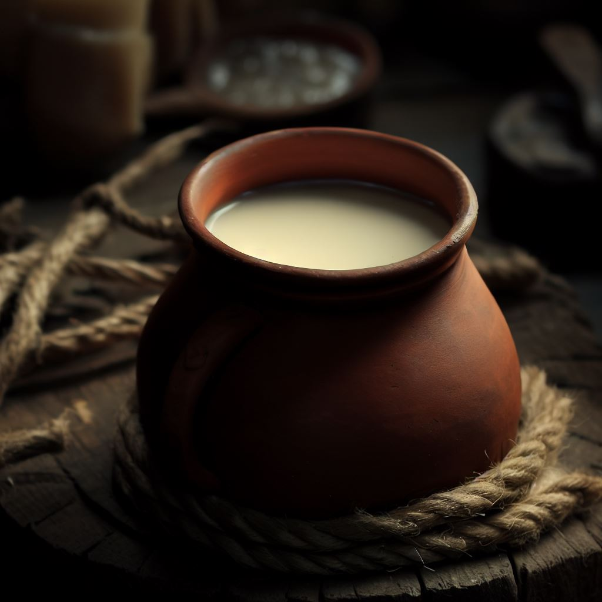

Welcome fellow warrior!
Your journey has been long...
The nights cold. The beasts fierce. The home far.
But now, it's time to rest.
Drink! Eat! Share your battle stories!
Among brothers.
Mjölnir, The Nordic Mead Hall, is home of the norsemen.
It had existed since the first men set foot on these lands.
And it shall remain that way...
That is why we continue our ancient traditions.
Quaffing the old norse drinks.
Devouring the same meals as our grandparents.
Giving a safe haven for travelers.
And feasting our victories.
Mjölnir, The Nordic Mead Hall, is home of the norsemen.
It had existed since the first men set foot on these lands.
And it shall remain that way...
That is why we continue our ancient traditions.
Quaffing the old norse drinks.
Devouring the same meals as our grandparents.
Giving a safe haven for travelers.
And feasting our victories.


 

Þórr, the jqtunn slayer and champion of the Æsir, is also the strongest among them.
It is so that he was able to lift Jqrmungandr.
One of his preferred drinks is beer made of barley, dried cranberries and raspberries.
One of the preferred drinks of Þórr is beer made of barley, dried cranberries and raspberries.
Níðhqggr, the dragon which gnaws the Yggdrasill's roots, has the sweetest blood among beasts.
It is mixed with hazelnuts, walnuts, red apples and red wine.
The sweet blood of Níðhqggr is mixed with hazelnuts, walnuts, red apples and red wine.
Óðinn, the Alfqðr and the wisest of all Æsir, became even wiser drinking from the Mead of Poetry.
It is known that it could be made from wolf's teeth, spruce bark and boiling mead.
The Mead of Poetry from which Óðinn drank and get wiser could be made from wolf's teeth, spruce bark and boiling mead.
Loki, the tricky and adopted Æsir, will lead the forces of chaos during Ragnarqk betraying his friends.
His last drink will be buffalo milk with berries, celery and garlic.
Loki's last drink after his betrayal will be buffalo milk with berries, celery and garlic.
Jqrmungandr, the unfathomably large sea serpent that encircles Miðgarðr, will fight against Þórr on Ragnarqk.
Among all preys, the herring is the most abundant. It is best eaten smoked with rosemary.
Among all preys of Jqrmungandr, the herring is the most abundant. It is best eaten smoked with rosemary.
The Æsir, who live in the world Ásgarðr, have been preparing for Ragnarqk since long ago.
Until then, the Æsir's and Valhqll's warriors eat porridge with pork, onions and mushrooms in all their feasts.
The Æsir's and Valhqll's warriors eat porridge with pork, onions and mushrooms in all their feasts.
Fenrisúlfr, the giant wolf and son of Loki, will swallow Óðinn on Ragnarqk.
There is a spread rumor about the skin of the beast that says it is delicious as a soup of deer meat with bread, parsley and radish.
The skin of Fenrisúlfr it is delicious as a soup of deer meat with bread, parsley and radish.
Freyja is the most beautiful goddess of the Vanir.
Her beauty is thanks to her feeding. It is said that she eats pancakes with honey, highbush blueberry and red dogwood.
It is said that Freyja eats pancakes with honey, highbush blueberry and red dogwood.